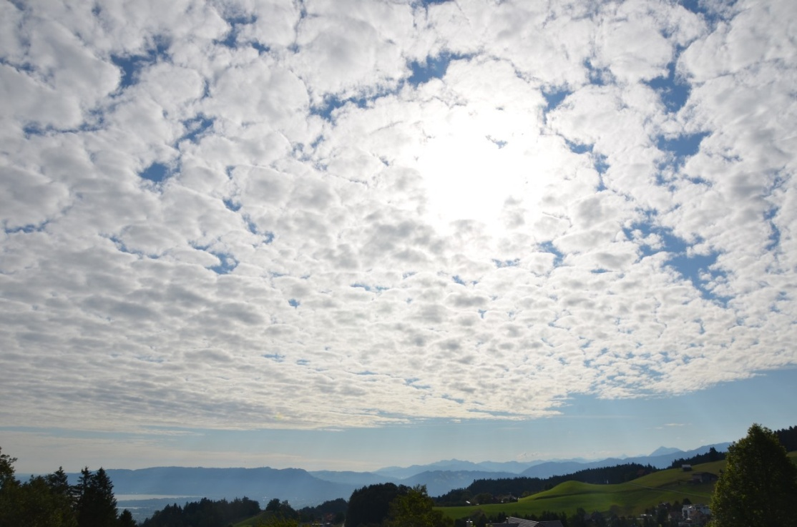

Altocumulus (Ac)
Grobe Schäfchenwolke
meist 2 - 7 km

Erkennen
Weisse oder graue Flecken, Ballen oder Walzen, oft in Feldern oder Schichten angeordnet.
gröbere Elemente als Cc
teilweise Eigenschatten
Felder, Ballen oder Walzen
Welche Form, Struktur und Ausdehnung fällt zuerst auf?
9
Mittelhohe Wolken
MITTELHOHE WOLKEN
Beobachtungsfrage
☰
☁
☁ Wolkenübersicht
‹
›
⌂